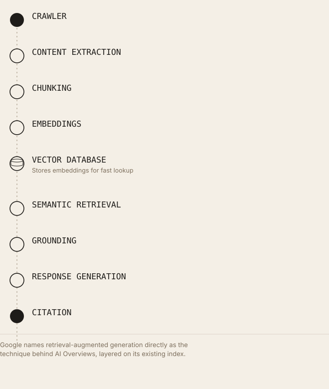

Retrieval Is Becoming More Important Than Ranking in AI Search
Ranking answers "which page deserves the top position." Retrieval answers a narrower question: which specific passages best support an answer, right now. Google's own documentation confirms both now run as sequential stages of the same system.
Executive Summary
Ranking answers the question "which page best deserves the top position." Retrieval answers a narrower, different question: "which specific passages of text best support an answer to this exact query, right now." Traditional search optimized for the first question because the output was a list of links a human would scan and choose from. AI-generated answers optimize for the second, because the output is a synthesized response that needs evidence, not a menu of options. Google has stated directly, in its own developer documentation, that AI Overviews and AI Mode use retrieval-augmented generation, grounding, to pull supporting material from its existing Search index, and that ranking and retrieval now operate as sequential stages of the same system rather than separate ones. This article defines both terms precisely using primary sources, traces the architecture that connects them, and states clearly where the evidence for "retrieval matters more" is documented fact versus reasonable inference from how these systems are built.
Introduction
Traditional SEO organized itself around ranking because ranking was, for two decades, the only output that mattered: Google returned ten blue links in an order, and a page's job was to be near the top of that order. Every major optimization discipline, link building, keyword targeting, Core Web Vitals, existed because it moved a page's position in that ordered list.
AI-generated search answers change what the system has to do before it can respond. An AI Overview, a Perplexity answer, or a Claude response grounded in web search doesn't return an ordered list for a human to evaluate; it synthesizes a direct answer and needs specific passages of evidence to construct that answer from. Google's own guidance confirms this architecture explicitly, describing AI Overviews and AI Mode as using retrieval-augmented generation to surface content from its Search index. This article defines ranking and retrieval with precision, using primary sources rather than the loosely interchangeable way the two terms are often used in industry writing, and then explains, with the same evidentiary discipline, where the balance between them has genuinely shifted and where it hasn't.
What Does Ranking Mean?
Ranking, in the search-engine sense, is the process of ordering a set of already-retrieved candidate documents by predicted relevance and quality, producing the sequence a user sees in a Search Engine Results Page (SERP).
PageRank, introduced by Larry Page and Sergey Brin in 1998, is a specific link-based authority signal, a page's importance is modeled recursively as a function of the importance of pages linking to it. It was one input among the ranking systems Google built, not a synonym for ranking as a whole; Google's ranking systems have incorporated hundreds of signals since, and PageRank's proportional weight in current systems is not publicly disclosed.
Authority and trust, in this context, are the ranking system's assessment of whether a page (and the site or author behind it) has demonstrated the qualifications and track record to be a reliable source on a given topic, formalized in Google's public quality-rater guidelines through the E-E-A-T framework (Experience, Expertise, Authoritativeness, Trustworthiness).
Relevance measures how well a document's content matches the specific intent behind a query, distinct from authority, a highly authoritative page can be irrelevant to a specific query, and a niche, lower-authority page can be highly relevant to one.
User signals, click-through rate, dwell time, and similar behavioral data, have been widely speculated to factor into ranking, though Google has not published the specific weighting or mechanics of how (or whether) individual user-signal types factor into ranking; this remains, per available public documentation, an area where industry inference exceeds confirmed detail.
How Google ranks pages, at the level Google has actually documented: a query triggers retrieval of candidate documents from Google's index, which are then scored and ordered using a combination of relevance-matching systems, quality signals (including E-E-A-T-related assessments), and, per Google's own AI-features guidance, the same core ranking and quality systems that power standard Search results, a claim Google makes explicitly about AI Overviews and AI Mode specifically, stating these features are rooted in Search's existing ranking infrastructure rather than a separate system.
What Does Retrieval Mean?
Information Retrieval (IR) is the academic and engineering discipline concerned with finding material (usually documents, or spans of documents) within a large unstructured collection that satisfies an information need expressed as a query. Ranking, as defined above, is technically one stage within IR broadly construed, but this article uses "retrieval" in the narrower, currently common sense: the process of identifying and returning the specific evidence passages a generation system will use to construct an answer.
Sparse retrieval matches queries to documents using lexical (word-level) overlap statistics, TF-IDF and BM25 are the standard implementations, scoring based on term frequency and document frequency without any representation of meaning.
Dense retrieval matches queries to documents using learned vector representations (embeddings), where semantic similarity, not shared vocabulary, determines a match. Karpukhin et al.'s 2020 Dense Passage Retrieval (DPR) paper demonstrated this concretely: a dual-encoder dense retriever, trained on a relatively small set of question-passage pairs, outperformed a strong BM25 baseline by 9 to 19 percentage points in absolute top-20 passage retrieval accuracy across multiple open-domain QA benchmarks, a documented, published, peer-reviewed result, not an industry estimate.
Hybrid retrieval combines sparse and dense methods, typically through score fusion, because the two approaches fail on different query types, dense retrieval underperforms on exact-match cases (product codes, rare proper nouns) that sparse retrieval handles natively, while sparse retrieval misses paraphrases and synonyms that dense retrieval catches.
Semantic search is the general term for search driven by meaning-based matching (typically dense retrieval) rather than lexical overlap.
Embeddings are fixed-length vector representations of text (or other data) positioned in a space where geometric closeness corresponds to semantic similarity, commonly produced by models in the Sentence-BERT family or by commercial embedding APIs (Cohere, OpenAI, and others).
Chunk retrieval operates over sub-document spans (paragraphs or sections) rather than whole documents, because generation models work with limited context and because a single document frequently contains one highly relevant passage alongside substantial irrelevant material, the mechanics of which are covered directly in the site's research on why AI retrieves chunks rather than whole pages.
Grounding is the practice of supplying a generation model with retrieved passages as context, so that its output is derived from that context rather than solely from parametric (trained-in) knowledge, Google's own documentation uses "grounding" as a direct synonym for retrieval-augmented generation in its AI Overviews guidance.
Vector search is the infrastructure layer, implemented in systems like FAISS, Pinecone, Weaviate, and Milvus, that performs efficient approximate-nearest-neighbor lookup over large collections of embeddings.
Traditional Search vs. AI Search
| Dimension | Traditional Search | AI Search |
|---|---|---|
| Primary mechanism | Ranking (ordering candidate pages) | Retrieval (selecting supporting evidence) plus ranking, sequentially |
| Output | Ordered list of links (SERP) | Synthesized, generated response |
| Unit of output | Page | Chunk (paragraph/section span), synthesized into prose |
| User action | Clicks a result | Reads a generated answer, optionally clicks a citation |
| Core historical signal | Backlinks (PageRank) | Embedding similarity plus entity/knowledge-graph alignment, on top of existing ranking signals |
| Matching method | Lexical plus link-graph based, historically; broadened over time | Semantic (dense) plus lexical (sparse), typically hybrid |
| Authority representation | Link-based (PageRank), plus E-E-A-T signals | Same underlying index and signals, per Google's stated architecture, not a separate authority system |
| Entities | A contributing signal, not central to the original ranking model | Central to disambiguation, grounding, and knowledge-graph alignment |
| Grounding | Not applicable, no generation step | The defining mechanism connecting retrieval to output |
| Indexing | Whole-document index | Same document index (per Google's stated AI Overviews architecture) plus, in general RAG systems, a separate chunk-embedding index |
| Citations | Implicit, the ranked link itself is the "citation" | Explicit, AI Overviews link to specific supporting pages; some RAG systems attribute specific claims to specific chunks |
| Search results | The end product | An intermediate step, the candidate set retrieval and ranking draw from before generation |
| Generated responses | Not applicable | The end product |
A documented, load-bearing detail from this table: Google's own guidance states AI Overviews and AI Mode are eligible to draw on any page that is already indexed and eligible to be shown in standard Search results, meaning the traditional ranking pipeline is not bypassed by AI features but is, per Google's explicit statement, the precondition for a page even entering AI-generated answer consideration.
How AI Retrieval Actually Works
Google's own description of this pipeline for AI Overviews and AI Mode names retrieval-augmented generation directly as the technique used to improve the quality, accuracy, and freshness of responses, the same architectural pattern this diagram describes, applied on top of Google's existing Search index rather than a separately built one.

Google names RAG directly as the technique behind AI Overviews, layered on its existing index.This is a meaningfully different claim than what independent RAG systems (built by LlamaIndex, LangChain, or custom pipelines) typically do, where the vector database and embedding pipeline are usually purpose-built rather than layered onto a pre-existing web index, Google has not published the specific architectural details of how its retrieval and generation components interact beyond confirming that RAG/grounding is the general technique in use.
Why Retrieval Is Becoming More Important
The mechanism, stated precisely: when a system's output was an ordered list of links, a page's job was to win a ranking comparison against every other candidate page. When a system's output is a synthesized answer, a page's (or more precisely, a chunk's) job is to be selected as supporting evidence for a specific claim within that answer, a different, more granular competition, happening beneath the page level.
Several properties measurably affect a chunk's odds of being selected as that evidence, each connecting to mechanisms documented elsewhere in this research, and often that selection draws on more than one source at once, a pattern measured directly in the site's research on multi-hop citation paths:
- Entity clarity, disambiguated, explicitly named entities reduce the inferential burden on the extraction and embedding steps, a mechanism grounded in how entity resolution and dense retrieval systems function generally.
- Chunk quality, chunking-strategy research finds boundary placement and size measurably affect retrieval accuracy, with no universal optimal size; Anthropic's published "contextual retrieval" technique addresses this directly by prepending short document-level context to each chunk before embedding.
- Semantic relevance, dense retrieval's core function, demonstrated concretely by DPR's 9 to 19 point accuracy improvement over BM25 on standard benchmarks.
- Structured data, Google's guidance recommends structured data as machine-readable context that AI systems can use to evaluate and categorize content; this is Google's own stated position, not third-party inference, though it applies with confirmed certainty only to Google's own AI features, not to third-party platforms.
- Freshness, Google names freshness explicitly as one of the qualities retrieval-augmented generation is meant to improve in its responses, alongside quality and accuracy.
- Author credibility, connects to the E-E-A-T framework already central to Google's existing ranking systems, carried forward into AI features per Google's stated architecture rather than introduced as a new, separate signal.
- Knowledge graphs, Google's own AI Overviews documentation names the Knowledge Graph directly as one of the sources generative responses can draw from, alongside the open web.
Why this shifts the optimization target, not eliminates the old one: a page still has to clear the same ranking and indexing bar Google has always used, its own documentation is explicit that AI Overviews eligibility requires the page to already be indexed and eligible for standard Search results. What's added on top is a second, finer-grained competition at the chunk level, determining which specific passages get selected as evidence once a page has already cleared that first bar.
Ranking vs. Retrieval Signals
| Signal | Primarily Ranking | Primarily Retrieval | Where They Overlap |
|---|---|---|---|
| Backlinks | Yes, foundational to PageRank | Not directly modeled in dense/sparse retrieval mechanics | Indirectly, via Google's stated reuse of existing ranking signals in AI features |
| Anchor text | Yes, a documented PageRank-era signal | No direct retrieval-stage equivalent | None documented |
| Internal links | Primarily discovery/crawl, secondarily ranking | Not a retrieval-quality factor | Both depend on a page being crawled and indexed first |
| Keyword optimization | Historically central (sparse/lexical ranking) | Contributes only via sparse retrieval's half of hybrid systems | Hybrid retrieval architectures use both, explicitly |
| Entity clarity | A contributing signal, not central to original ranking models | Central, disambiguation directly affects embedding and grounding quality | Both benefit, but the mechanism differs: ranking via topical relevance, retrieval via reduced ambiguity |
| Embedding similarity | Not applicable to classic ranking algorithms | Core mechanism of dense retrieval | N/A, a retrieval-native concept |
| Chunk quality | Not applicable, ranking operates on whole pages | Central | N/A, a retrieval-native concept |
| Semantic precision | Contributes to modern relevance-matching systems broadly | Central to dense retrieval specifically | Both use semantic understanding, at different granularity (page vs chunk) |
| Schema/structured data | Not a ranking factor per Google's own repeated statements | A confirmed context input for Google's AI features specifically | Both benefit from reduced content-type ambiguity |
| Grounding quality | Not applicable | The connective step between retrieval and generation | N/A, a retrieval/generation-native concept |
| Citation likelihood | Loosely analogous to ranking position | A direct downstream consequence of retrieval selection | Both are the "did this content get chosen" outcome, at different pipeline stages |
| Retrieval confidence | Not applicable | A direct property of embedding similarity scores | N/A, a retrieval-native concept |
Where they overlap, concretely: both systems depend on the same upstream gate, a page must be crawled and indexed before either ranking or retrieval can consider it, per Google's explicit AI-features eligibility statement. Where they differ, concretely: ranking operates at page granularity using signals accumulated over a page's history (links, authority); retrieval operates at chunk granularity using signals computed at read-time (embedding similarity to the specific query).
Measuring Retrieval Readiness
The following metrics are proposed by this article as a practical evaluation framework, they are author recommendations, not documented industry-standard metrics published by Google, OpenAI, Anthropic, or any academic IR venue reviewed for this piece. No primary source defines or publishes a standardized "Retrieval Readiness Score." Organizations should treat these as internally useful, directional heuristics, not confirmed ranking or citation factors.
- Entity Clarity Score, the proportion of key entities on a page explicitly named/disambiguated (for example, "Apple Inc." vs. bare "Apple") versus left ambiguous or referred to only by pronoun.
- Chunk Quality Score, a qualitative or automated assessment of whether a page's natural section boundaries (headings, paragraph breaks) align with self-contained, single-topic spans a chunker would produce cleanly.
- Semantic Coverage, whether a page's content addresses the range of phrasings and sub-questions a user might reasonably ask about its topic, evaluated by testing multiple query variants against the page's embeddings.
- Citation Readiness, whether specific factual claims on a page are stated in self-contained, attributable sentences that could stand alone as a cited snippet, versus claims that depend on distant surrounding context to make sense.
- Grounding Confidence, a proxy metric, computable by testing a page's chunks against likely target queries in an embedding-similarity check, for how strongly a chunk would score in a hypothetical retrieval pass.
- Information Density, the ratio of unique, verifiable factual content to filler, restatement, or padding within a section.
How organizations could evaluate these, practically: run a page's own content through an off-the-shelf embedding model (openly available via Sentence Transformers or a commercial API) against a set of realistic target queries, and inspect which sections score highest, a low-cost, directly testable proxy for how a chunk-based retrieval system might treat the same content, though it will not replicate any specific commercial platform's proprietary retrieval pipeline exactly.
Common Misconceptions
- "Rankings are dead." Incorrect. Google's own documentation states AI Overviews eligibility requires a page to already be indexed and eligible for standard ranked Search results, ranking remains the gating first step, not a bypassed one.
- "SEO is obsolete." Incorrect. Google states directly that existing SEO fundamentals continue to be worthwhile for AI features, because those features are rooted in Search's core ranking and quality systems.
- "Only vector search matters." Incorrect. Documented hybrid retrieval architectures combine dense and sparse methods specifically because dense retrieval underperforms sparse on exact-match queries; an all-vector approach discards a documented source of retrieval accuracy.
- "Backlinks no longer matter." Incorrect for the reason stated above, if ranking remains a gating step for AI-features eligibility, and backlinks remain a documented ranking input, backlinks retain indirect relevance to AI-answer eligibility even though they have no direct role in the chunk-level retrieval stage itself.
- "Embeddings replace indexing." Incorrect, and conflates two different meanings of "indexing." Google's stated AI Overviews architecture draws on its existing Search index, embeddings, where used, are a retrieval-stage mechanism operating on top of or alongside that indexing, per available documentation, not a wholesale replacement for it.
Practical GEO Checklist
- Confirm baseline ranking eligibility first, Google's own documentation states this is a precondition for AI Overviews/AI Mode inclusion, not an optional extra step.
- Improve semantic structure by aligning heading boundaries with genuinely self-contained topic sections.
- Reduce ambiguity by explicitly naming entities on first mention rather than relying on pronouns or bare, polysemous terms.
- Use structured data types Google has confirmed relevance for (Article, FAQPage, Organization, Person) rather than speculative or exotic types.
- Write concise, self-contained sections that could function as standalone citation snippets.
- Optimize headings to name the specific concept or entity a section addresses.
- Strengthen entity relationships by stating connections explicitly ("X, a subsidiary of Y") rather than relying on proximity.
- Improve information density, remove filler and restatement that dilutes the ratio of verifiable claims per section.
- Maintain freshness on time-sensitive content, since Google names freshness explicitly as a quality RAG/grounding is meant to improve.
- Improve author credibility signals (bylines, credentials,
Personschema) consistent with the E-E-A-T framework Google has stated carries forward into AI features. - Reduce duplicate content across pages, since retrieval systems (like ranking systems) have no documented benefit from near-identical chunks competing against each other.
- Test your own content's retrieval behavior using an openly available embedding model against realistic target queries, as a low-cost self-audit.
- Prioritize hybrid discoverability, ensure both exact terminology (for sparse/lexical matching) and natural paraphrasing (for dense/semantic matching) appear somewhere in your content.
- Avoid content built primarily to game AI-answer inclusion, Google's scaled-content-abuse spam policy explicitly covers content created primarily to manipulate generative responses.
- Ensure crawling is allowed in robots.txt and by any CDN/hosting infrastructure, a documented prerequisite Google states directly in its AI-features guidance.
- Make content easily findable through internal links, which Google names explicitly as a relevant AI-features best practice.
- Track AI Overview impressions where available in Search Console, and cross-reference with third-party citation-tracking tools to identify which pages and queries are actually being selected as evidence.
- Treat chunk-level and page-level optimization as complementary passes, not a single combined task, a well-ranked page can still contain poorly chunked sections that underperform at the retrieval stage.
- Avoid assuming any specific third-party AI platform (OpenAI, Anthropic, Perplexity) uses identical retrieval mechanics to Google's documented AI Overviews architecture, each platform's pipeline specifics are, where undocumented, genuinely unknown rather than safely assumed.
- Revisit retrieval-readiness practices periodically as an evolving discipline, no primary source has published a mature, stable measurement standard yet, and today's best-practice heuristics should be expected to change as more platforms publish architecture detail.
Future Outlook
AI Overviews and AI Mode. Google's stated direction, RAG/grounding layered on its existing ranking infrastructure, rather than a parallel system, is documented as current architecture, not speculation; how this evolves further (deeper integration, expanded retrieval scope) is not something Google's public documentation forecasts in detail.
Agentic search and conversational search. As AI systems increasingly perform multi-turn, task-oriented interactions rather than single-query lookups, retrieval likely needs to happen repeatedly within a single session, potentially against evolving context, a reasonable architectural inference from how agentic systems generally operate, not a documented commitment from any specific vendor about future retrieval-system design.
Persistent memory. Whether AI assistants will increasingly retrieve from persistent, session-spanning memory stores (as distinct from live, per-query web retrieval) is an active industry direction in product design generally, but no primary source reviewed for this article documents a specific technical architecture unifying persistent memory with the live web-retrieval pipeline described here.
Knowledge graphs. Google's AI Overviews documentation already names the Knowledge Graph as a current source for generative responses, alongside the open web, this is documented present-day architecture, and its role plausibly grows as entity-resolution techniques improve, though the specific future weighting isn't published.
Model Context Protocol (MCP). Anthropic's MCP addresses a different layer entirely, connecting AI applications to external tools and structured data sources at runtime, and is a plausible complement to the retrieval pipeline described in this article (an agent could use MCP to query a live system instead of retrieving a crawled, chunked, embedded version of the same information) without being a substitute for it.
Real-time retrieval. The tension between training-time knowledge and query-time retrieval is architecturally resolved, per Google's own statement, in favor of grounding specifically to improve freshness and accuracy, a documented rationale for why retrieval-based approaches are favored over relying on parametric knowledge alone for time-sensitive queries, though this is Google's stated reasoning for its own system, not evidence of a universal industry consensus mechanism.
Key Takeaways
- Ranking orders already-candidate pages; retrieval selects the specific evidence a generation system will use, different questions, at different levels of granularity.
- Google states directly that AI Overviews and AI Mode use retrieval-augmented generation ("grounding") built on its existing Search index and ranking systems, not a separate system.
- Dense Passage Retrieval (Karpukhin et al., 2020) is a published, peer-reviewed demonstration that dense retrieval can outperform BM25 by 9 to 19 percentage points in absolute top-20 accuracy, the clearest documented evidence for why semantic retrieval matters.
- Ranking eligibility remains a documented precondition for AI Overviews inclusion, a page must already be indexed and eligible for standard Search results, per Google's own guidance.
- Hybrid retrieval (sparse plus dense combined) remains standard practice because dense retrieval alone underperforms on exact-match queries, "only vector search matters" is not supported by the retrieval-systems literature.
- Chunk-level factors (chunking strategy, entity clarity, information density) are a genuinely new, additional optimization layer, not a replacement for page-level ranking factors.
- Structured data has confirmed relevance to Google's own AI features specifically, per Google's stated guidance, this confirmation does not extend to other AI platforms, which haven't published equivalent statements.
- No primary source publishes a standardized "Retrieval Readiness Score" or equivalent metric, the metrics proposed in this article are author recommendations, explicitly labeled as such.
- Backlinks retain indirect relevance to AI-answer eligibility because they remain a documented ranking input, and ranking eligibility gates AI-features inclusion, "backlinks no longer matter" overstates the evidence.
- The accurate framing is that retrieval has become an additional, finer-grained optimization layer sitting on top of ranking, not a replacement for it, this article's title states retrieval is "becoming more important," and the evidence supports that as a claim about relative attention and effort required, not about ranking's obsolescence.
Glossary
- Ranking
- Ordering already-retrieved candidate documents by predicted relevance and quality.
- Retrieval
- Identifying and returning the specific evidence (documents or chunks) relevant to a query.
- Sparse retrieval
- Lexical, term-overlap-based retrieval (TF-IDF, BM25).
- Dense retrieval
- Embedding-similarity-based retrieval using learned vector representations.
- Hybrid retrieval
- Combining sparse and dense retrieval via score fusion.
- Grounding
- Supplying retrieved content to a generation model as context; Google's stated synonym for retrieval-augmented generation.
- Retrieval-Augmented Generation (RAG)
- The general technique of retrieving external content to inform a generation model's output, named explicitly in Google's AI Overviews documentation.
- Chunk
- A sub-document span (typically paragraph or section scale) used as the retrieval unit in chunk-based systems.
- E-E-A-T
- Experience, Expertise, Authoritativeness, Trustworthiness; Google's public quality-rater framework, carried forward into AI features per Google's own statement.
- Vector database
- Infrastructure for efficient approximate-nearest-neighbor search over embeddings (for example, FAISS, Pinecone, Weaviate, Milvus).
FAQ
If retrieval matters more, should I stop caring about traditional rankings?
No. Google's own documentation makes ranking eligibility a precondition for AI-features inclusion, the two are sequential, not competing, priorities.
Does chunk-level optimization apply to platforms other than Google?
The general mechanics (chunking, embedding, dense retrieval) are documented, platform-agnostic IR research, so the underlying logic likely applies broadly. But specific platform behavior, whether OpenAI's or Anthropic's retrieval pipelines weight these factors identically to what Google has described for its own system, is not independently documented, and shouldn't be assumed.
Is there a tool that measures "retrieval readiness" the way Search Console measures ranking?
Not to a standardized, industry-wide degree, per available evidence. The metrics proposed in this article's measurement section are author recommendations, not confirmed platform-provided metrics.
Does dense retrieval make sparse retrieval (BM25) obsolete?
No. Hybrid retrieval architectures use both specifically because they fail on different query types; DPR's own published results were measured as an improvement over BM25, not a case for discarding it in production hybrid systems.
References
- Google for Developers, "AI Features and Your Website," Google Search Central documentation, developers.google.com/search/docs/appearance/ai-features
- Google for Developers, "Google's Guide to Optimizing for Generative AI Features on Google Search," Google Search Central documentation, developers.google.com/search/docs/fundamentals/ai-optimization-guide
- Brin, S., and Page, L., "The Anatomy of a Large-Scale Hypertextual Web Search Engine," Computer Networks and ISDN Systems, 1998
- Karpukhin, V., Oguz, B., Min, S., Lewis, P., Wu, L., Edunov, S., Chen, D., and Yih, W., "Dense Passage Retrieval for Open-Domain Question Answering," Proceedings of EMNLP 2020 (ACL Anthology)
- Reimers, N., and Gurevych, I., "Sentence-BERT: Sentence Embeddings using Siamese BERT-Networks," Proceedings of EMNLP-IJCNLP 2019 (ACL Anthology)
- Anthropic Engineering, "Introducing Contextual Retrieval"
- Google, Search Quality Rater Guidelines (E-E-A-T framework documentation)